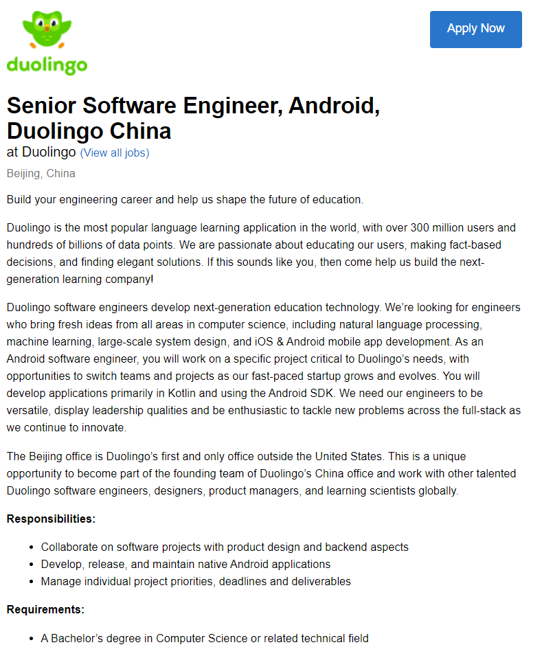

An Android engineer- Developing and contributing in software projects with others to help curate an app that enables individuals to learn new languages with ease and convenience. What makes this position appealing for me is the Duolingo itself and the benefits it offers for its employees such as competitive salaries, flexible hours, and providing opportunities for growth.
The necessary skills required for this position involved having a solid understanding of Computer science, focusing on data structures, algorithms and software design. In addition to this, having an in-depth knowledge of Java and ability to work on individual projects are also required.
Currently, I only have a few years worth of programming experience.
The most important step, in my opinion, is continuing to build upon my technical skills/programming as I progress through my course and during my free time, paying close attention to data structures and such. I’d also like to improve upon my soft skills through contributing with other classmates, to ensure that I become a team member that others could rely on in the workplace in the future.